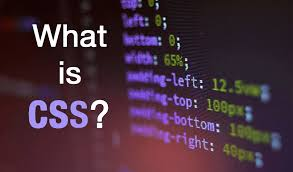

HTML (HyperText Markup Language) is a markup language used to create content for the World Wide Web. It consists of a series of tags and attributes that are used to define the structure and layout of web pages.
HTML is used to create text-based documents that can be displayed in a web browser. It is responsible for specifying the content of a web page, including text, images, videos, and other multimedia elements. HTML tags are used to indicate the beginning and end of each element on a web page, and each tag can have one or more attributes that provide additional information about the element.
Some of the most common HTML tags include headings, paragraphs, links, images, tables, forms, and lists. These tags can be used to structure the content of a web page and to provide additional functionality, such as enabling users to submit forms or navigate to other pages.
HTML is a foundational technology for the web and is used in conjunction with other technologies such as CSS (Cascading Style Sheets) and JavaScript to create modern, interactive websites.

CSS (Cascading Style Sheets) is a style sheet language used to describe the presentation of HTML (HyperText Markup Language) and XML (Extensible Markup Language) documents. It is used to control the layout, appearance, and formatting of web pages, and can be used to apply styles to all elements on apage or to specific elements, such as headings or links.
CSS works by defining styles for different HTML elements, such as fonts, colors, backgrounds, borders, and spacing. These styles can be defined using a variety of selectors, including element selectors, class selectors, and ID selectors. Once defined, styles can be applied to HTML elements using a variety of properties, such as font-size, background-color, and margin.
CSS can be applied to HTML documents in several ways, including using inline styles, internal styles, and external styles. Inline styles are defined directly within an HTML element, while internal styles are defined within the head section of an HTML document. External styles are defined in separate CSS files and linked to an HTML document using the link tag.
CSS is a critical component of modern web design, enabling designers to create visually appealing and user-friendly websites. It is often used in conjunction with HTML and JavaScript to create dynamic and interactive web pages.
PHP (Hypertext Preprocessor) is a popular server-side scripting language used to create dynamic web pages and web applications. It is an open-source language and is widely supported by web hosting providers, making it a popular choice for building dynamic websites.
PHP is designed to work with HTML and can be embedded directly into HTML code, allowing web developers to create dynamic content on web pages. It can also be used to interact with databases, process forms, and handle cookies and sessions.
PHP is a server-side language, which means that it is executed on the server before the web page is sent to the user's browser. This enables developers to create web pages that can be customized based on user input or other variables, such as the time of day or the user's location.
Some of the key features of PHP include its support for a wide range of databases, including MySQL, PostgreSQL, and Oracle, as well as its ability to work with various protocols, such as HTTP, SMTP, and FTP. PHP also supports a wide range of libraries and frameworks, making it easy to create complex web applications.
Overall, PHP is a powerful and flexible language that is widely used for building dynamic websites and web applications. Its popularity, ease of use, and robust feature set make it a popular choice for web developers around the world.

Python is a high-level, interpreted programming language that is designed to be easy to read and write. It is widely used for a variety of applications, including web development, scientific computing, data analysis, artificial intelligence, and machine learning.
One of the key features of Python is its simplicity and ease of use. Its syntax is easy to understand, and its dynamic typing and automatic memory management make it easy to write and debug code quickly. Python is also highly extensible, with a large number of libraries and modules available for a wide range of applications.
Python is an interpreted language, which means that code is executed line-by-line as it is read by the interpreter. This makes it easy to test and debug code quickly, without the need to compile it beforehand. Python also supports multiple programming paradigms, including object-oriented, functional, and procedural programming.
Python's popularity is due in part to its versatility and wide range of applications. It is used for a wide range of tasks, including data analysis and visualization, web development, scientific computing, and machine learning. Python is also a popular language for teaching computer programming, thanks to its readability and ease of use.
Overall, Python is a powerful and versatile programming language that is widely used for a variety of applications. Its simplicity and ease of use make it a popular choice for beginners and experienced programmers alike, and its wide range of libraries and modules make it a powerful tool for developers in many different fields.